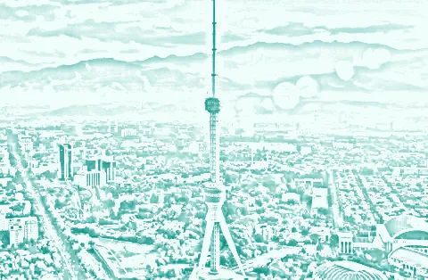
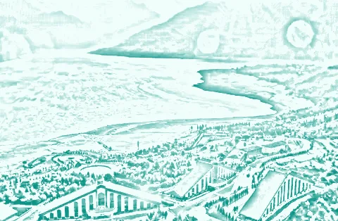
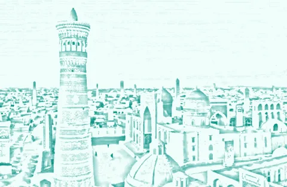
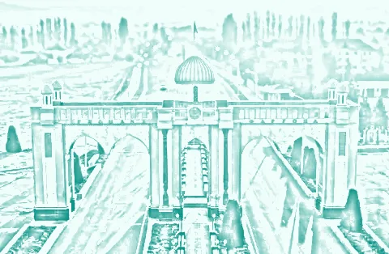
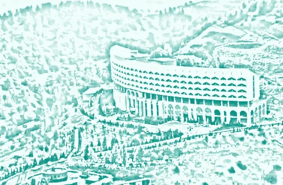
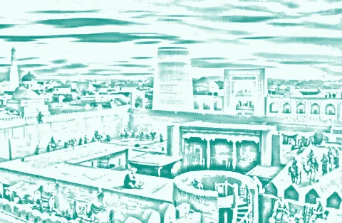
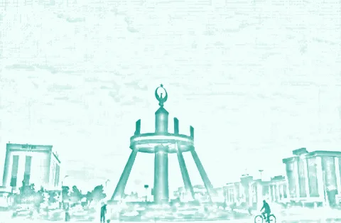
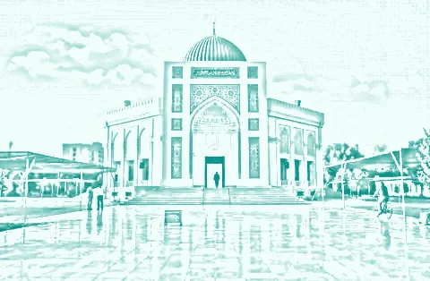
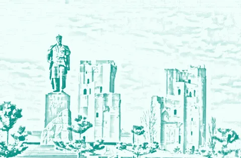

14 viloyat, «Safarlar» (boʻsh kun, kanal, «Xabar bering»), «Sevimli haydovchilar», xato qatorlari, bitta taklif shtorkasi. Matnlar hammasi bor; yangi matn yoʻq.
1. 14 viloyat · tepasiRasm, toʻliq nom; ikki ustun, hamma kartalar bir xil oʻlchamda.
Qayerdan yoʻlga chiqasiz?
Viloyat, tuman yoki shahar

Toshkent shahri

Toshkent viloyati
Andijon viloyati

Buxoro viloyati

Fargʻona viloyati

Jizzax viloyati

Xorazm viloyati

Namangan viloyati
2. 14 viloyat · pastiPastga aylantirilgan: Qoraqalpogʻiston ikki qatorda, karta oʻsmaydi.
Qayerdan yoʻlga chiqasiz?
Xorazm viloyati
Namangan viloyati

Navoiy viloyati

Qashqadaryo viloyati
Samarqand viloyati
Sirdaryo viloyati
Surxondaryo viloyati
Qoraqalpogʻiston Respublikasi
3. SafarlarKunlar, filtr, safarlar; pastda kanal kartasi va «Xabar bering» qatori.
Toshkent → Samarqand≈ 300 km · ≈ 5 soat
Bu12
Se13
Ch14
Pa15
Ju16
Sh17
Ya18
Necha kishi? 1234
Tez orada joʻnaydi
08:00 → ≈ 13:0090 000
3 ta boʻsh joy · uyingizdan
Jasur ★ 4,9 · Cobalt
10:30 → ≈ 15:3085 000
2 ta boʻsh joy · pitakdan
Bobur ★ 4,7 · Nexia
Yangi safarlarni bilish
Rida | Samarqand kanali
Samarqand yoʻnalishidagi barcha yangi safarlar bir joyda
Xabar bering
Shu yoʻnalishda safar chiqsa, bot xabar beradi
4. Safarlar · boʻsh kunBoʻsh kun: belgi va 3 yoʻl bitta kartada, bir xil qatorlar.
Toshkent → Samarqand≈ 300 km · ≈ 5 soat
Bu12
Se13
Ch14
Pa15
Ju16
Sh17
Ya18
Hozircha safar yoʻq
Yangi safar chiqishi bilan bilib olishning 3 yoʻli
Rida | Samarqand kanali
Samarqand yoʻnalishidagi barcha yangi safarlar bir joyda
Xabar bering
Shu yoʻnalishda safar chiqsa, bot xabar beradi
Soʻrov qoldirish
Haydovchilar sizni topadi
5. «Xabar bering» shtorkasiQatorni bosish darhol obuna qiladi: «Xabar bering» tugmasi yoʻq (П13).
Toshkent → Samarqand≈ 300 km · ≈ 5 soat
Xabar bering
Toshkent → Samarqand. Qaysi kunga?
Faqat 14-oktabr
Shu kungi safarlar
Istalgan kun
30 kun davomida
6. Obuna boʻldiQator yashil yozuvga aylanadi; shtorkani yopsa ham qator qoladi (uchinchi koʻrinish yoʻq).
Toshkent → Samarqand≈ 300 km · ≈ 5 soat
Bu12
Se13
Ch14
Pa15
Ju16
Sh17
Ya18
Hozircha safar yoʻq
Yangi safar chiqishi bilan bilib olishning 3 yoʻli
Obuna boʻldingiz. Mos eʼlon chiqsa, bot xabar beradi.
Soʻrov qoldirish
Haydovchilar sizni topadi
7. Kanal postidan «Xabar bering»Ostidagi sahifa: yoʻnalish kartasi; shtorka darhol ochiq (5 kabi).
Xabar bering
Toshkent
Toshkent shahri
Samarqand
Samarqand viloyati
Xabar bering
Toshkent → Samarqand. Qaysi kunga?
Faqat 14-oktabr
Shu kungi safarlar
Istalgan kun
30 kun davomida
8. Sevimli haydovchilarHaydovchilar qatorlarda; ularning safarlari «Safarlar» kartasi bilan (bitta koʻrinish).
Sevimli haydovchilar
Haydovchilar
Jasur
Chevrolet Cobalt, Oq
★ 4,8 (37)
Bobur
Chevrolet Nexia, Kulrang
★ 4,7 (12)
Ularning safarlari
08:00 → ≈ 13:0090 000
14-okt · Toshkent → Samarqand · 3 ta boʻsh joy
Jasur ★ 4,8 · Cobalt
07:00 → ≈ 11:0075 000
15-okt · Toshkent → Jizzax · 2 ta boʻsh joy
Bobur ★ 4,7 · Nexia
9. Roʻyxatlar yuklanmadiBlok ichida qizil qator: bosish qayta yuklaydi; qolgan blok ishlayveradi.
MadinaYoʻlovchi
Mening safarlarim12 ta safar
SuhbatlarHaydovchilar bilan
Sevimli haydovchilar3 ta haydovchi
YordamSavol boʻlsa
Xatolik yuz berdi
Qayta urinish
QayerdanChilonzor, Toshkent shahri
QayergaQayerga borasiz?
Soʻrov qoldirish
Safar topish
10. Amal xatosiKarta ostida bir xil qizil qator (hamma joyda shu koʻrinish).
MadinaYoʻlovchi
Mening safarlarim12 ta safar
SuhbatlarHaydovchilar bilan
Sevimli haydovchilar3 ta haydovchi
YordamSavol boʻlsa
Yoʻldasiz≈ 11:30
Samarqand viloyati
Jasur · Cobalt, oq
Internet bilan aloqa yoʻq. Tarmoqni tekshirib, qayta urinib koʻring.
Yaqinlarimga
Yetib keldim
11. Bitta taklif shtorkasi«Mening soʻrovim» ustida ham G68 shtorkasi: ikkinchi koʻrinish olib tashlanadi.
Mening soʻrovimToshkent → Samarqand · 14-okt · 2 joy
1 / 2
Yangi taklifJasur · ★ 4,9Oq Chevrolet Cobalt 01A 123 BC
14-okt, seshanba · 08:00
Toshkent → Samarqand
Uyingizdan olib ketadi
2 joy
Bir joy 90 000
180 000
Rad etish
Qabul qilish
Barcha takliflar (2) · Keyinroq
12. Joy sahifasi · uchrashuvUchrashuv kartasi blokdagi bilan bitta komponent: vaqt, joy, raqam, «Men keldim» bir marta.